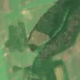
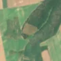

2,1 ha · Nicopole, com. Smulți
văzută schimbată prima dată pe 13 iun. 2026


Autorizația cea mai apropiată nu acoperă tăierea: autorizația începe după ce schimbarea se vedea deja.
APV 2500118600230 · Ocolul Silvic Griviţa, valabilă 5 aug. 2026 – 20 oct. 2026, la 0 m
Terenul: pădure de stat, după amenajamentul silvic publicat.
Ce se vede în poze: În poza detaliată din 2017 zona marcată era acoperită de pădure deasă, iar în pozele «înainte» și «după» este un luat de teren deschis, de culoare bej, în mijlocul pădurii care rămâne verde. Aceasta arată că arborii au fost tăși pe o suprafață compactă, dar golul exista deja în poza «înainte», deci tăierea s-a făcut mai devreme.